女子テニス部 全国選抜高校テニス大会京都府大会 ベスト４
○全国選抜高校テニス大会京都府大会 ベスト４
９月22日から28日にかけて
HOS向島及び丹波自然公園で開催された、
令和６年度全国選抜高校テニス大会京都府大会
女子団体戦において、
ベスト４の成績を収めました。
この結果により、12月21日･22日に、
近畿の強豪校を集めて京都で開催される、
京都招待テニス選手権大会(団体･個人)に、
京都府の代表としての出場が決まりました。
団体メンバーは以下の通り(登録順)です。
内海 紗希(２年) 常塚 侑花(１年) 松岡 明里(１年)
夜久 かのん(２年) 田中 心(２年) 田口 友菜(１年)
山中 陽菜乃(１年) 福田 皐(２年) 増田 陽香(２年)
・対戦結果 ２Ｒ 山城 ３０(打切) 北稜
３Ｒ 山城 ３０(打切) 城南菱創
４Ｒ 山城 ３０(打切) 京都橘
準決勝 山城 ０３(打切) 京都両洋
順位戦 山城 ０３(打切) 同志社国際
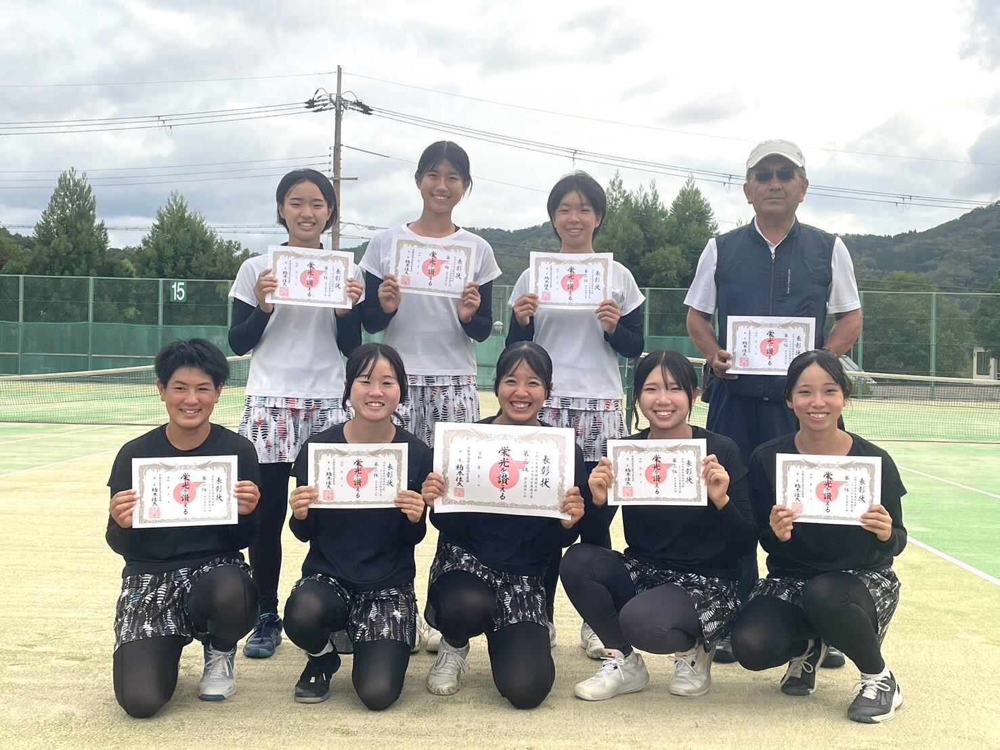
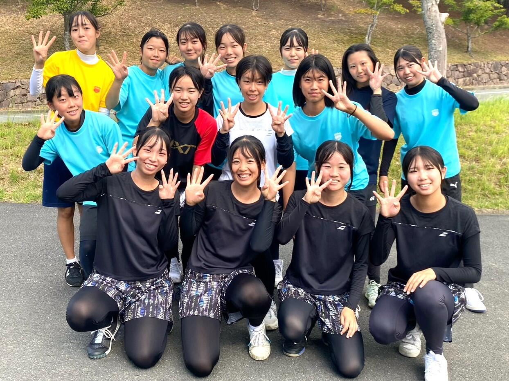
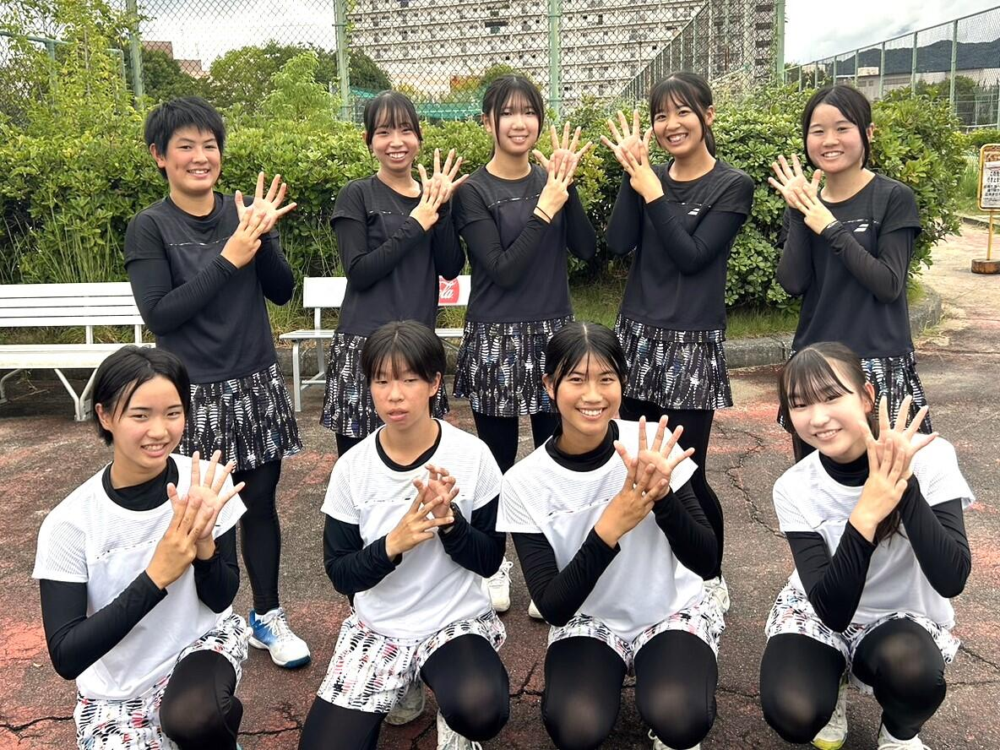
○近畿高等学校テニス大会 出場
９月14日(土)に、神戸総合運動公園で開催された、
令和６年度近畿高等学校テニス大会女子シングルスに、
内海 紗希(２年)が出場し、
初戦を突破して２Ｒに進出しました。
・対戦結果
１Ｒ 内海 紗希(２年) ６０ 和歌山信愛高(２年)
２Ｒ 内海 紗希(２年) １６ 京都両洋高(２年)
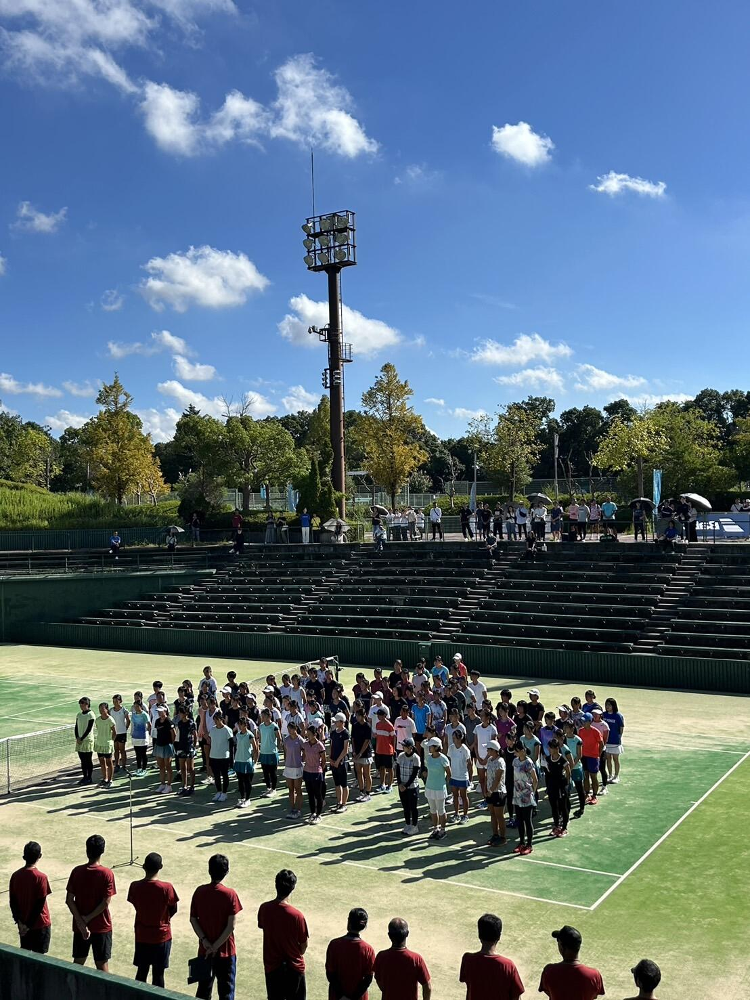
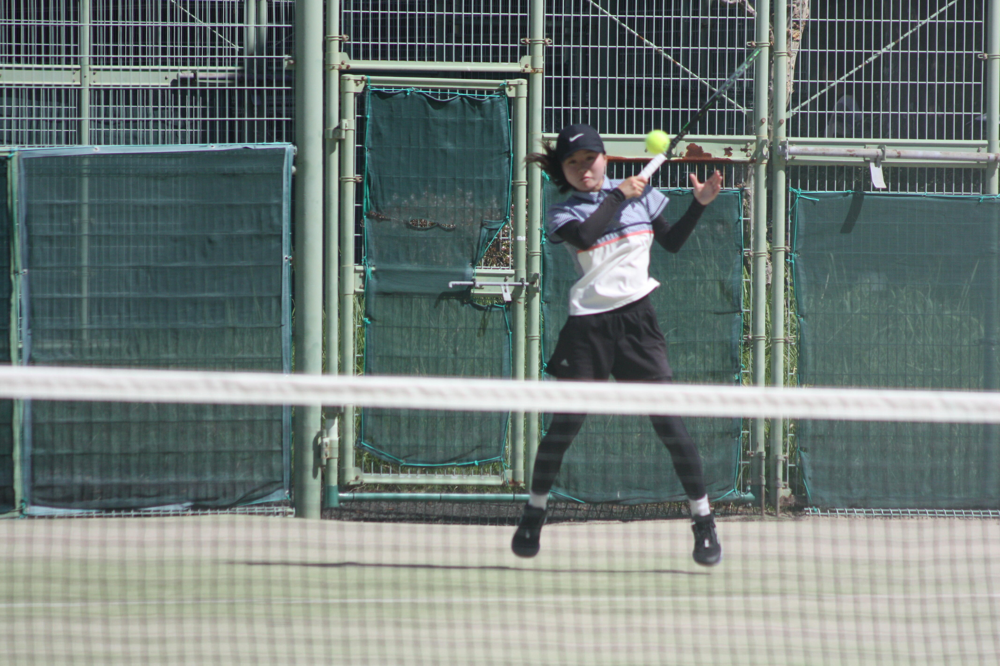
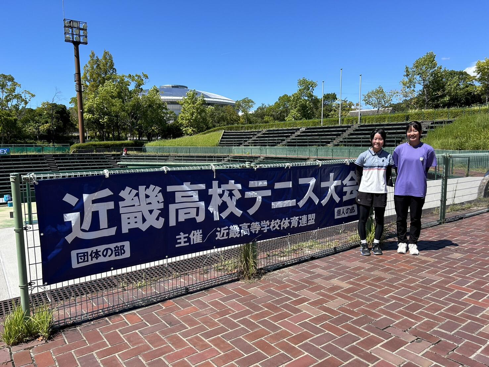
○近畿高等学校テニス大会京都府予選
８月18日から８月24日にかけて開催された、
令和６年度近畿高等学校テニス大会京都府予選において、
部員それぞれが夏休みの練習の成果を発揮しました。
中でも、内海 紗希(２年)が
女子シングルスでベスト１６に入り、
２年連続で近畿高等学校テニス大会への
出場権を獲得しました。
・本戦結果(女子シングルス)
１Ｒ 内海 紗希(２年) ６０ 同志社国際高(２年)
常塚 侑花(１年) ６３ 京都女子高(２年)
松岡 明里(１年) ７５ 京都両洋高(１年)
夜久かのん(２年) １６ 京都両洋高(１年)
田中 心(２年) ５７ 京都外大西高(１年)
田口 友菜(１年) ０６ 京都両洋高(１年)
２Ｒ 内海 紗希(２年) ７５ 京都外大西高(１年)
常塚 侑花(１年) ３６ 京都両洋高(１年)
松岡 明里(１年) ０６ 京都外大西高(１年)
３Ｒ 内海 紗希(２年) １６ 京都外大西高(１年)
順位戦 常塚 侑花(１年) １６ 同志社国際高(１年)
松岡 明里(１年) ４６ 京都外大西高(１年)
・本戦結果(女子ダブルス)
１Ｒ 内海(２年)夜久(２年) ４６ 京都外大西高(1.2年)
田中(２年)松岡(１年) ２６ 京都両洋高(1.1年)
常塚(１年)山中(１年) １６ 京都両洋高(1.1年)
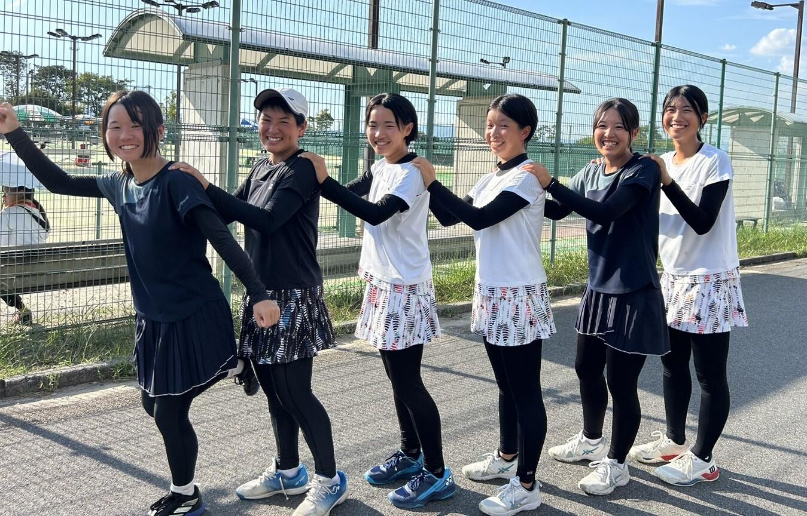
○夏期合同合宿
８月７日(水)から10日(土)までの３泊４日で、
競技力の向上と、チーム力の育成を兼ねて、
福知山･大江山グリーンロッジで、
夏期合同合宿を行いました。
今年は、本校と、城南菱創、洛北、久御山
光泉カトリック、京都共栄学園の
合計６校の選手が集まり、
総勢５４名の大規模合宿になりました。
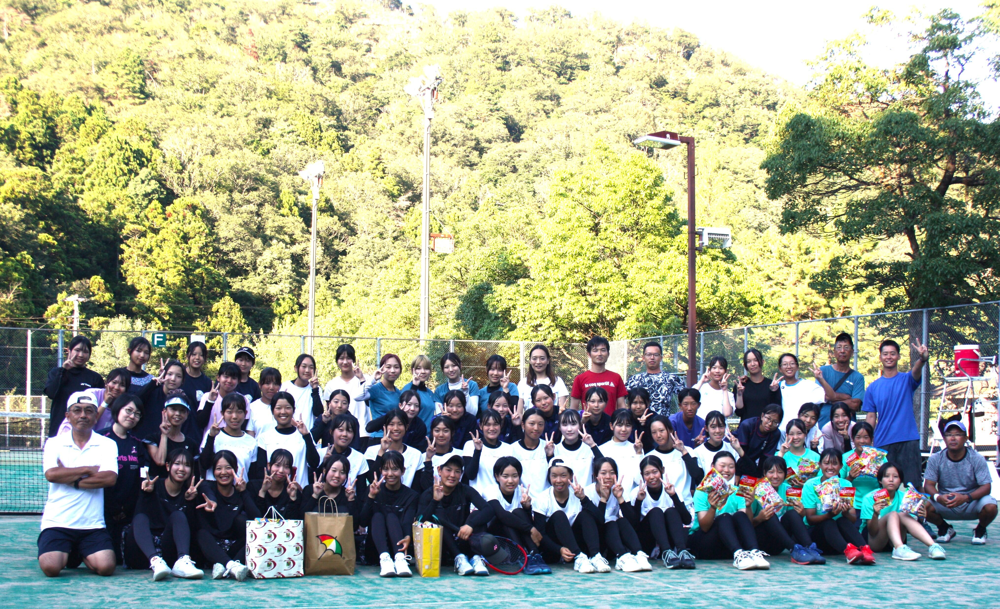
○京都府公立高等学校テニス選手権大会
７月31日に丹波自然公園で開催された、
令和６年度京都府公立高等学校テニス選手権大会
女子団体の部において１次予選を勝ち上がり、
11月に行われる２次予選への出場が決まりました。
また８月１日に同公園で開催された、
同大会個人の部において、
内海 紗希(２年) 夜久 かのん(２年)
松岡 明里(１年) 田中 心(２年)の４名の、
10月に行われる２次予選への出場が決まりました。
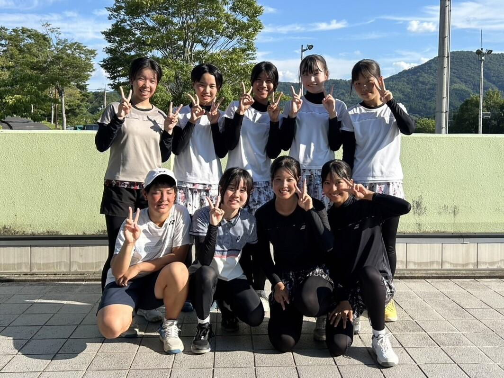

○京都サマージュニアテニス選手権大会
７月22日から29日にかけて、
2024京都サマージュニアテニス選手権大会に、
全員が出場しました。
高校からテニスを始めた者にとっては、
初めての公式戦でした。
・本戦結果(女子シングルス)
１Ｒ 内海 紗希(２年) ６１ 京都外大西高(２年)
田中 心(２年) ６３ 立命館宇治高(１年)
松岡 明里(１年) ６２ 京都橘高(２年)
夜久かのん(２年) ２６ 京都両洋高(１年)
福田 皐(２年) １６ 四ノ宮ＴＣ(２年)
常塚 侑花(１年) ２６ 同志社国際高(１年)
２Ｒ 内海 紗希(２年) ６１ 京都両洋高(２年)
田中 心(２年) ２６ 同志社国際高(２年)
松岡 明里(１年) １６ 京都両洋高(２年)
３Ｒ 内海 紗希(２年) ５７ 京都両洋高(２年)
・本戦結果(女子ダブルス)
１Ｒ 内海(２年)夜久(２年) １６ 京都両洋高(2.2年)
○関西ジュニアテニス選手権大会 出場
７月11日･16日に、
大阪市･モリタテニスセンター靭で開催された、
2024年度関西ジュニアテニス選手権大会、
16歳以下女子シングルスに、
松岡 明里(１年)が出場し、２回戦に進出しました。
・対戦結果
１Ｒ 松岡 明里(１年) ８３ 和歌山･開智高(１年)
２Ｒ 松岡 明里(１年) １８ 兵庫･神戸野田高(１年)
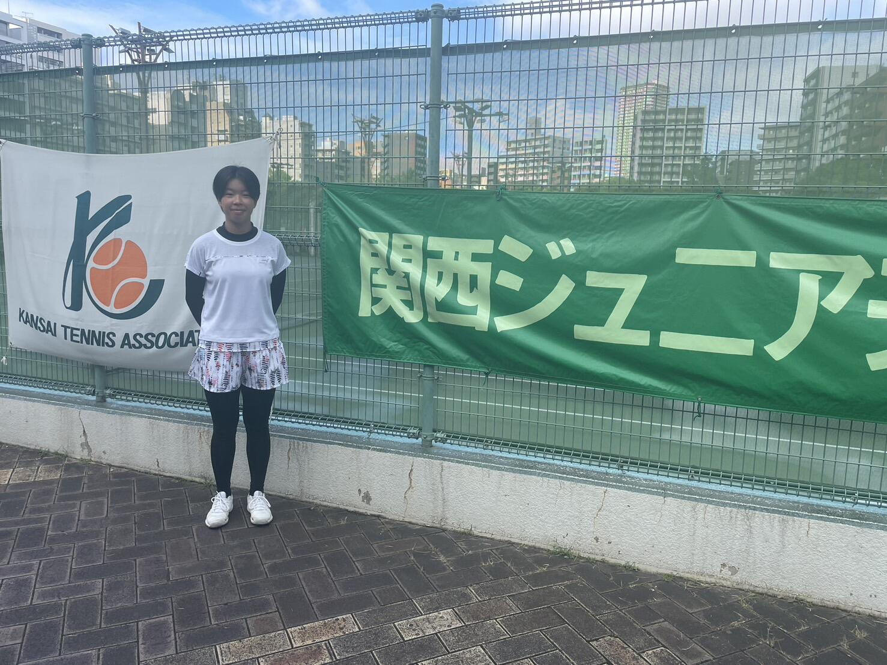

○近畿高等学校選抜テニス大会新人の部 出場
６月15日(土)に、
滋賀県･長浜バイオ大学ドームで開催された、
令和６年度近畿高等学校選抜テニス大会新人の部に、
内海 紗希(２年)が、京都府の代表として出場しました。
今後の活躍が期待される新人のための大会です。
・対戦結果
１Ｒ 内海 紗希(２年) ０６ 兵庫･相生学院高(２年)
ｺﾝｿﾚｰｼｮﾝ 内海 紗希(２年) ２６ 和歌山･田辺高(２年)
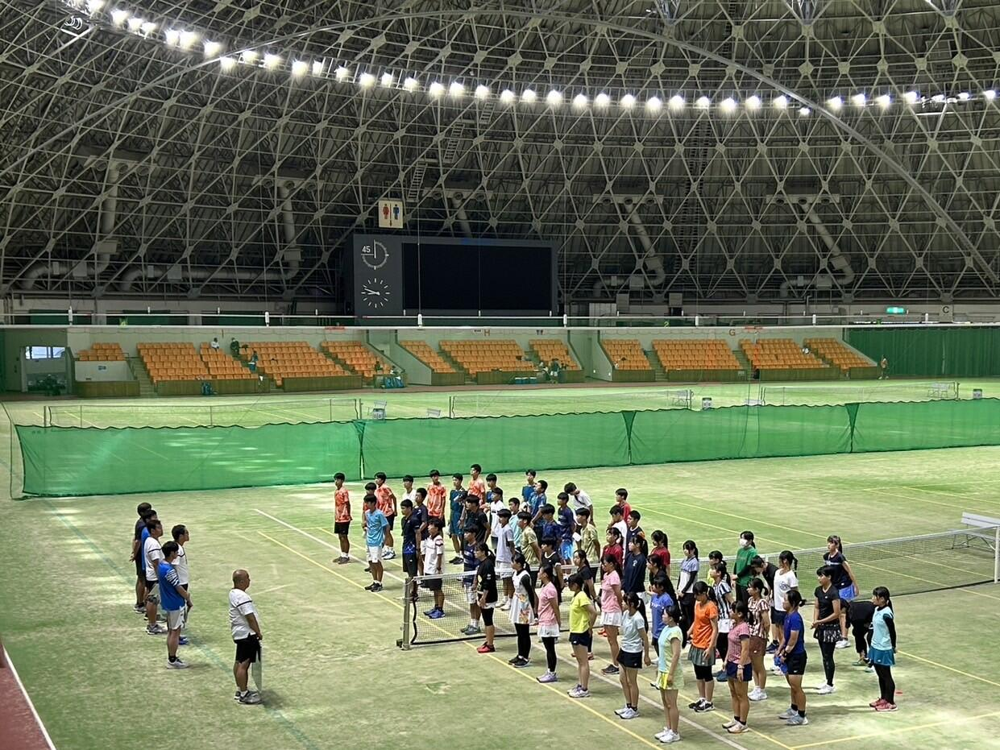
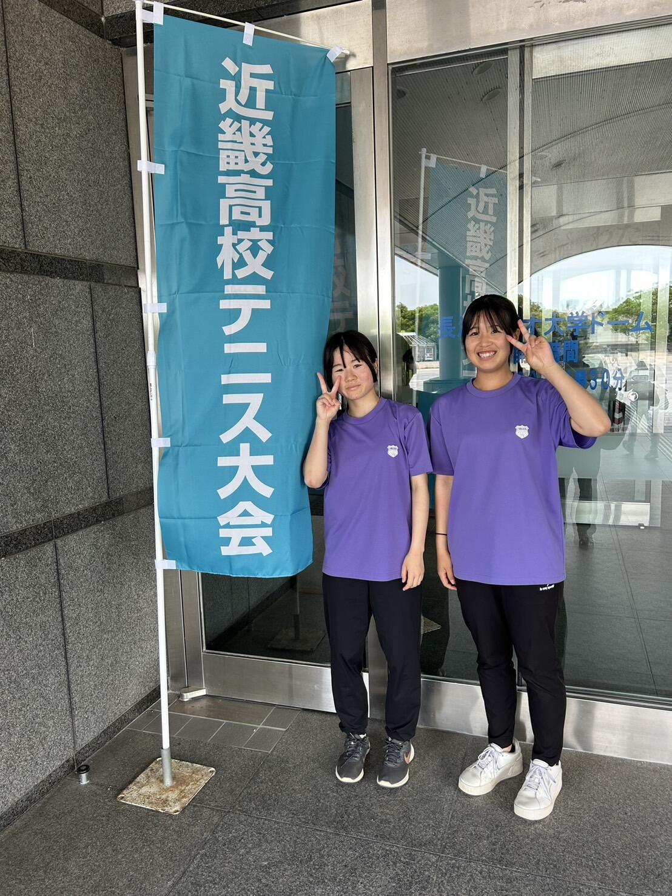
○その他・練習試合など
９月16日(祝)同志社香里高(深北公園ﾃﾆｽｺｰﾄ)
８月17日(土)同志社高(同高)
８月16日(金)京都橘高(橘第2ｺｰﾄ)
８月14日(水)大阪市立桜宮高(同高)
８月６日(火)同志社女子高(同高)
７月14日15日亀岡ジュニアテニス大会
６月16日(日)四日市南高(津市民ﾃﾆｽｺｰﾄ)
６月９日(日)同志社香里高(深北公園ﾃﾆｽｺｰﾄ)
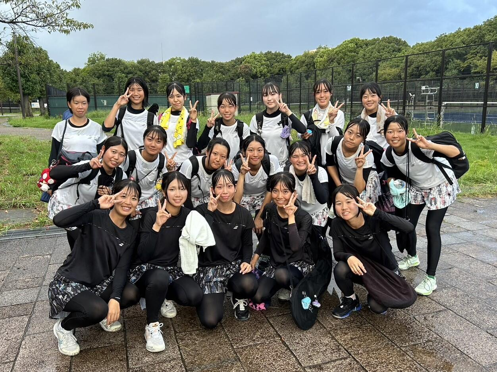
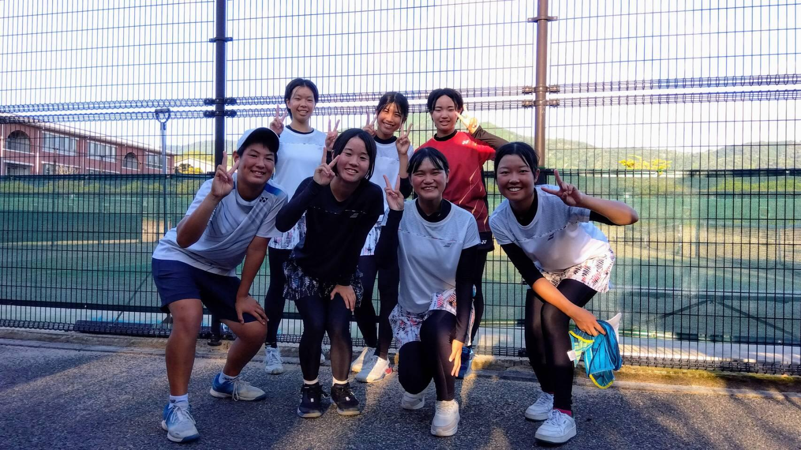
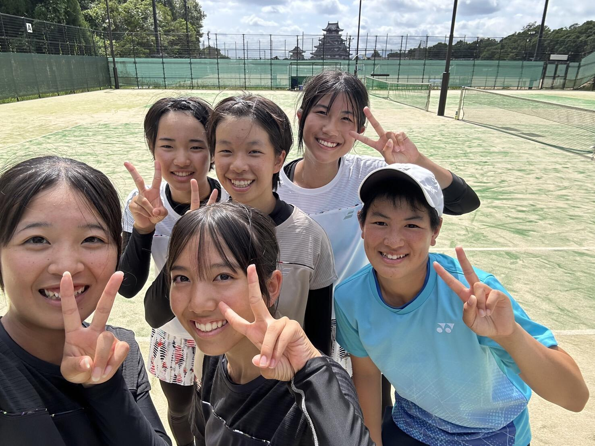

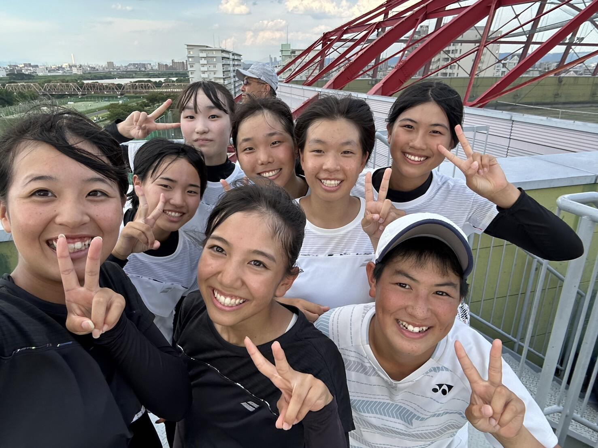
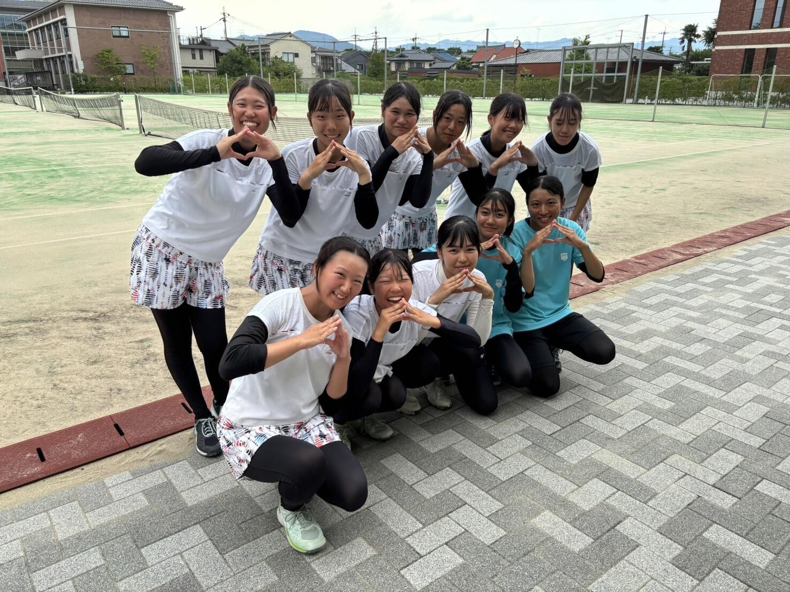
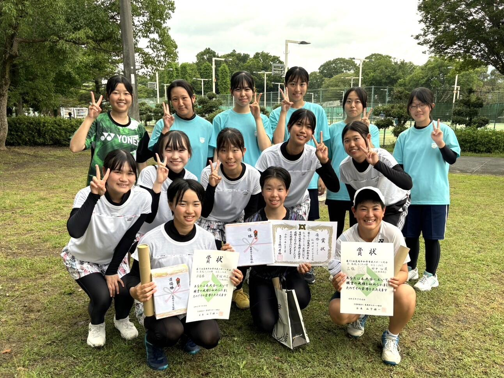
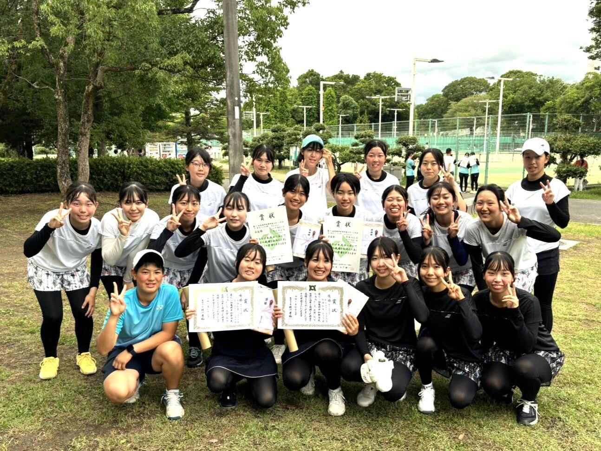
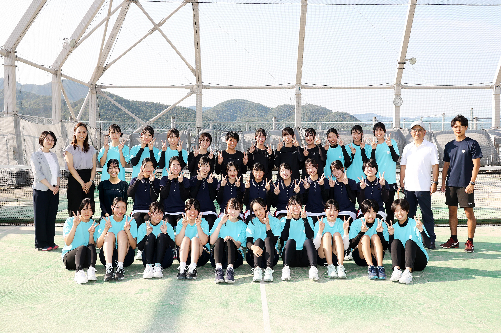
2024年度のチームです。
カテゴリ一覧
主要リンク